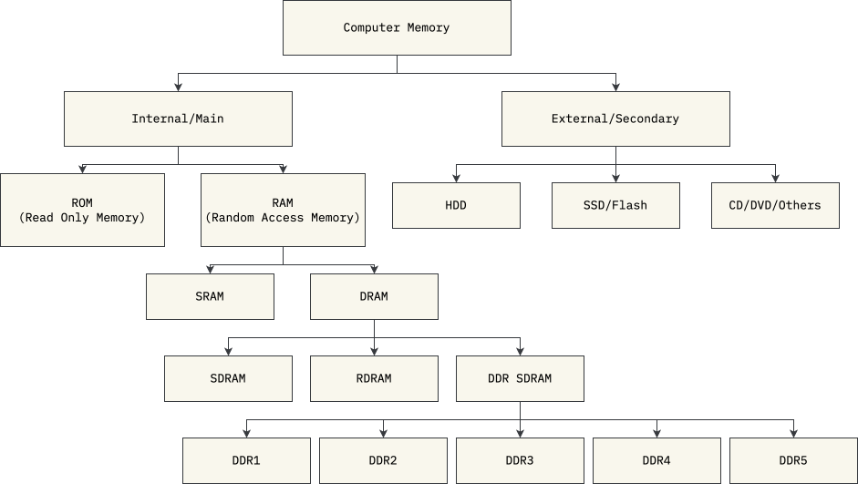
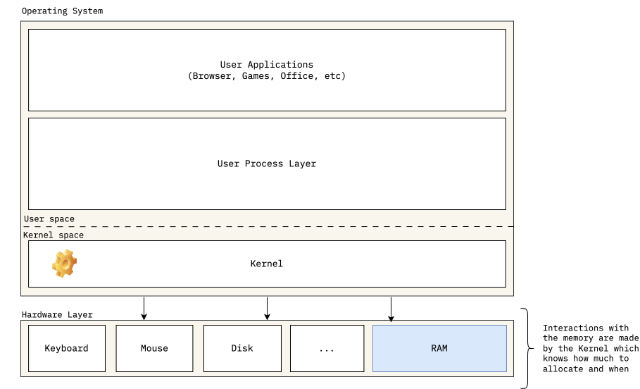
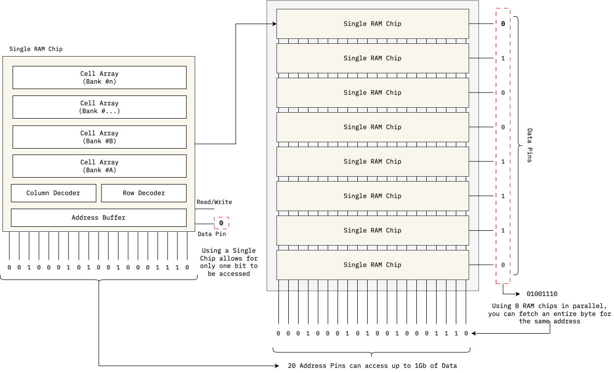
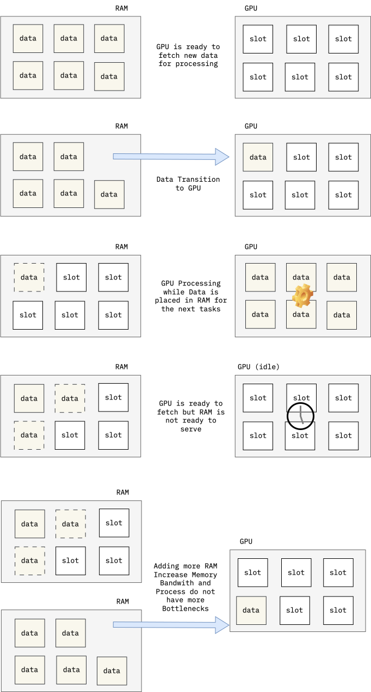

How RAM works, and why do We even need so much memory nowadays?

Why do we need another article on Memory in 2026?
As of the time of writing this article, we're facing a RAM shortage in the world, and there are multiple factors why, which I don't intend to describe here. What I truly want to bring is visibility to people of the basics. This not only makes you understand the importance of it, but also adds a layer of understanding that most people don't have, given that, during these times, we simply don't need to care. We have enough abstraction layers on top of what is used to make things work (aka a computer) that most human beings will go through the journey of their life without a hint on how a computer actually performs the tasks that are inputted to them. This is also part of the current problem that we're facing.
With the BOOM of AI everywhere, people are clearly overusing it. We use it to make videos, images, text, and sound that do not add anything to humanity overall. Most of it is true garbage, and is being used solely for picoseconds of dopamine rush. These things consume an incredible amount of computing power and natural resources all throughout the planet while giving us back Will Smith eating pasta.
While the central theme of this article is not about the overuse of AI, it's the main motivation why I'm writing this. I want to make sure that, once you read through this series of articles, you keep this overuse on top of your mind. It's only by making people aware of how things work at the most granular layer, that they realize the immense effort and technology dedicated to generating these junks. With that in mind, let's start with a feasible intro to how computers remember.
How Does a Computer Remembers?
This concept is really simple, and is composed by a clever analogy:
All of us have light switches at home. Some may be the classical ones, where you need to toggle them with your fingers, and others have Bluetooth and WiFi capabilities. I'll leave to you which one to imagine.
The use of a switch is the most classical way to make your house remember a state. You can turn the kitchen on, the living room off, and the bedrooms on. If you leave your house, and come back some time later, you'll find yourself with your house in the same state it was before: With kitchen on, the living room off, and the bedrooms on. This is the same way computer memory works: It uses switches (but in their case electrical, not mechanical) to remember the state of what was written before into it. They use a switch called transistor, which is a switch you can toggle using electrical energy. If you want to turn it on, you put energy into it, if you want to turn it off, you remove energy from it[1].
What is RAM and why we are so dependent of it
The computer needs a set of these transistor switches to be able to remember states. This is required because not only does it need to remember where it was at a specific point in time but also to successfully proceed with a set of instructions given to it. It also needs a way of storing and retrieving data from the user, otherwise, it would forget your name every time.
There's a catch, tho.
Multiple types of these memories are used and they have different objectives and characteristics, so the computer knows when to use which one, and for a specific purpose. The list is not too big, but worth knowing. The definition when memory hardware loses data when turned off (when power is cut) is referred to as volatile. The table below summarizes the main types of memory used in computers, their volatility, speed, typical use-cases, and some notes on their characteristics.
| Memory Type | Volatility | Speed | Typical Use‑Case | Notes |
|---|---|---|---|---|
| Registers | Volatile | Fastest | Hold data for immediate processing by the CPU | Extremely limited capacity since they are part of the CPU itself |
| RAM | Volatile | Can be SRAM (static) or DRAM (dynamic) | Main system memory used for object storage | Good mix of speed and size. Used during processing for local storage of data. |
| Flash (NAND/EEPROM) | Non‑volatile | Moderate (fast read, slow write/erase) | SSDs, USB drives, firmware | Faster than HDDs but slower than RAM |
| Magnetic storage (HDD) | Non‑volatile | Slow (mechanical) | Mass storage | Large capacity and cost-effective |
| ROM | Non‑volatile | Varies | Firmware, boot code | Often one-time programmable. Used as a backup for critical system code. |
The table above summarizes the main categories; there are also specialized types such as magnetic tape, optical media, Cache/SRAM, and emerging technologies (MRAM, PCM, etc.) that you might encounter. They are completely out of our scope, and do not correlate much with what we want to achieve here, but you get the point.
The drawing below helps visualize the segments of memory:

In this article itself, we're going to focus on both SRAM and DRAM, which are the most common types of RAM used in computers, and is what we usually refer to when we say "RAM".
So what is RAM?

RAM is volatile memory that requires constant refreshing to maintain its data, and is used as the main system memory for running applications and the operating system. The reason why we're so dependent on it is because it provides a fast and efficient way for the CPU to access data and instructions that are currently in use, from programs that you might be using, and to hold instructions of what the CPU needs to do next.
Without RAM, the computer would have to rely on much slower storage options for the basic calculations it needs to do, and to store the objects needed for specific things while programs are running, which would significantly degrade performance and make it impractical for most tasks. If we decided to add flash and have a big memory instead, our performance would downgrade, and if we decided to have those as registers built inside the CPU, we would have to have much more expensive and bigger CPUs. RAM comes right in the middle: A way to have a few GBs of memory that are fast enough for our computer to work without trading off read/write speed.
How does RAM helps the computer?
The answer is pretty straightforward. It sits there as a safe space for the computer to write data and retrieve it when it needs to continue. The RAM is managed by the operating system, which allocates (or grabs) the amount of memory necessary for a task during a program execution. Let's say that you load a program that translates text.
During the first initialization of the program, it asks for some memory to work, let's say, 1KB. It's going to use this 1KB to store the text you want to translate. After you type the text and press translate, the software then asks the operating system to save this into memory, which is then used as the base text for the translation. After your program translates it (we're not going to dive into the translation process here in this article for obvious reasons), the program asks the OS to then allocate another 1KB for the results, fetches this data and presents it to you on the screen.

This example highlights the importance of RAM in your system. It helps the computer to store intermediary results so those can be used when most needed. After you shut down your computer, and do not save the translated text into a .txt file (in this case, using the HD or the Flash memory), it will be lost, because as we've seen in the beginning, RAM is volatile.
How it works under the hood
As we stated earlier, RAM uses a bunch of switches. The curious thing, though, is that we can access one switch at a time for every single chip of RAM[2].
To be able to fetch this state, and since a RAM chip has tons of these switches, we need to tell the RAM chip at what address the switch we want to access is. After we tell the chip where it is, it will tell us the state of the switch: Positive voltage when ON, 0 volts when OFF. This is normally read in a digital system as 1 when ON and 0 when OFF.
Since RAM chips have constantly grown in size (thus making it possible to access more addresses), it was clear that the number of address pins needed to be increased. If you wanted to have an address bus (the sequence of address pins) to be able to access 64KB of memory, you would need 16 pins. In binary, these 16 pins would give you the possibility to access just this amount. But what if we make a RAM chip bigger than 64KB?
The answer is logical: We need more addressing pins. In the figure below, we can count a total of 20 address pins, which let you address around 1 billion different combinations, or 1GB.
It sounds impressive right? In today's world, a 1Gb of RAM cannot do much, but we're talking about being able to store 1 Billion different combinations of switches into it.
But as you can see, this RAM chip can only hold either a 1 or a 0 in its switch. Once you pass that address to the RAM itself, you'll be able to fetch a single bit. How can we store a byte (which is a sequence of 8 bits) of information then? We can do it sequentially, or in parallel, which seems more clever.
If you connect 8 of those 1Gb of RAM in parallel on the address lines, you'll end up with all the same amount of address pins, but now with 8 data lines. If you correctly build your accessing logic, when you send the address you want to the address pin, now you can store a whole byte into it by adding to the different data lines the bits that you need. You can now save 8 billion bits, or 1 billion bytes.

Computers engineers can now work on serving (or retreiving) to the RAM chip the smallest unit possible (the byte). This happens because sotwares do not tend to save only one or two bits. For that, we request a memory that we can save a whole byte, and use the byte as the smallest unit possible. That's why a RAM chip that can store 8 Billion bits (1 Billion bytes), is a 1Gb RAM.
Types of RAM
As time went by, the engineers realized that RAM chips that are static (as the one described above, which are made from flip-flops) were super fast, reliable and power efficient, but that was only the case when the computer was idle. Since SRAM takes 6 transistors to store a bit (which then need more physical space per square inch), this ended up being harder to manufacture and way more expensive if we wanted to make RAMs with over 1Gb. DRAM then became more popular since it used only one capacitor and one transistor, but consumed more energy since it constantly needed to be refreshed to keep its state.
Memory constructed from flip-flops is more precisely called static random access memory. By 1980, dynamic RAM, or DRAM, was taking over and soon became dominant. DRAM requires only one transistor and one capacitor for each memory cell. [...] A capacitor can store an electric charge but not indefinitely. The key to making DRAM work is that these charges are refreshed thousands of times per second.
- Charles Petzold[3]
Below, I've added a table with the details of each for easier reference.
| Feature | SRAM | DRAM |
|---|---|---|
| Cell Structure | 6 transistors (flip-flop) | 1 transistor + 1 capacitor |
| Speed | Very fast (low latency) | Fast, but higher latency than SRAM |
| Power Consumption | Lower (especially when idle) | Higher (needs constant refresh) |
| Density | Lower (larger cells, less bits per chip) | Higher (smaller cells, more bits per chip) |
| Cost | More expensive per bit | Cheaper per bit |
| Usage | CPU cache, registers, embedded systems | Main system memory (RAM), graphics memory |
| Refresh Required? | No | Yes, thousands of times per second |
| Data Retention | As long as power is supplied | Only while refreshed and powered |
| Integration | Often integrated on CPU chips | Usually separate chips/modules |
| Typical Capacity | KBs to a few MBs (cache) | GBs (main memory) |
| Example Chips | Intel 2114, used in microcontroller caches | DDR4, DDR5, used in desktop/laptop RAM |
| Failure Modes | Less prone to bit errors | More prone to bit errors (needs ECC in servers) |
The amount of details found when designing for these components are endless. There are multiple ways of integrating them into circuits and other relevant details on the process of accessing the data, storing it, referencing it, and designing hardware that will interact with it in a stable and fast manner. These are all more complex and for the sake of not making this article too extensive and out of purpose, we're stopping here.
Connecting the Dots
The intense usage of RAM during the AI era reduces itself into two main areas: Training and Serving.
Training usage is related to the process of training an LLM that normally takes weeks to be completed, and needs a bunch of special types of machines. Since training an LLM basically means that you're going to create a ton of different parameters using the entire data available on the internet (Peta and Peta bytes of data), this data needs to be stored somehow to be processed. Initially, that does not get stored in RAM, but at a storage layer.

When we start processing this data and feeding it into a neural network these machines are all connected together, and start processing things in parallel, in LLMs case, using GPUs. GPUs (Graphical Processing Units) are one type of logical processing unit that is really good at multiplying stuff, simply speaking. They initially were conceptualized to process graphics (That's where the "G" comes in), but for purposes not aligned with this article, they started to be used during LLM training.
GPUs processing power is called compute power. During training and serving, to complete a round of parameter multiplication (a phase of the process), it needs to fetch data from the attached memory. Since GPUs process these multiplications super fast, the more data we have in a faster memory type to serve them, the faster you can train a model. This capacity of serving the data saved in memory to the GPU is called memory bandwidth. When total memory bandwidth is lower than GPU compute power, we end up bottlenecking the entire process.
The drawing on the right showcases (in a really simple abstraction and grandma-friendly way) how this can impact the overall training of an LLM model and how one of the sides can become a bottleneck in the process.
You can see that the only way to reduce the bottleneck process of the memory bandwidth is to add more memory. This increases the capabilities of the process and makes the GPU work more efficiently since it reduces the amount of time a GPU spends without data to work with.
This is similar on serving, where data from users all around the world needs to be input fast on a model, transformed, calculated, transformed back and then get served to the user. This process is getting faster and faster as the days go by, and multiple companies are competing towards the state-of-the-art model. Since the production and availability of the hardware is finite, there's a rush on securing the manufacturing pipeline of the few companies in the world that build RAM.
To overcome adding more, a strategy that could be used is to add more speed. To do that, we need to increase the frequency that RAM operates. Because of this, AI companies are focusing their workloads on computers that bundle a GPU with a special type of RAM, called HBM (High Bandwidth Memory). Below are the details of HBM memory compared to DRAM.
| Feature | DRAM (DDR4/DDR5) | HBM (High Bandwidth Memory) |
|---|---|---|
| Physical Structure | Planar chips on DIMMs, side-by-side on motherboard | 3D-stacked chips, vertically integrated with TSVs (Through-Silicon Vias) |
| Bandwidth | ~25-50 GB/s per module (DDR4/DDR5) | Up to 1 TB/s per stack (HBM2e/HBM3) |
| Bus Width | 64 bits per channel | 1024+ bits per stack |
| Latency | Moderate (higher than SRAM, lower than SSD) | Similar or slightly higher than DRAM, but compensated by bandwidth |
| Capacity | Up to 128 GB per module (main memory) | Typically 4-32 GB per stack (used as GPU/accelerator memory) |
| Power Efficiency | Standard | Much higher (lower energy per bit transferred) |
| Integration | On motherboard, separate from CPU/GPU | Very close to GPU/CPU die (often on same package) |
| Use Cases | Main system memory for PCs, servers | High-performance GPUs, AI accelerators, HPC, networking |
| Cost | Lower per GB | Higher per GB |
| Example Devices | Desktop/laptop RAM, server memory | NVIDIA A100, H100, AMD MI300, AI/ML accelerators |
HBM is specifically designed to provide extremely high memory bandwidth by stacking memory dies vertically and placing them very close to the processor (such as a GPU or AI accelerator). This architecture allows for much faster data transfer rates compared to traditional DRAM, which is critical for AI workloads that require moving massive amounts of data in and out of memory every second[4]. In AI training and inference, the speed at which data can be fed to the compute units (GPUs/TPUs) often becomes the bottleneck. HBM's high bandwidth and low power consumption enable GPUs to operate at their full compute potential, significantly accelerating training times and improving efficiency for large models. This is why modern AI hardware, such as NVIDIA's H100 and AMD's MI300, use HBM instead of standard DRAM.
Maybe the most important point in this article, now that you know how RAM works, is the fact that the manufacturing capabilities (and even the machines) that make DRAM are also used to make HBM, which connects us to the last part of this article.
A note from the author on the Current RAM shortage
There are multiple specialists that are running global chip shortage analysis way better than I can. In this little section, I've aimed at adding my two cents. Since it's just an opinion (and it's my blog anyway), I feel the urge to position myself on the subject, and you can judge the way it most suits you.
I believe we're facing an AI usage surge for things that do not necessarily need AI. The compulsive usage without knowing the consequences of it makes people think that AI has only the positive side. When people use AI to create videos, for example, the amount of processing power used is extreme. If they are using it in a way that does not add value to humanity, this increases the negative impact because the consumption of the resources needed to generate the content does not add a single drop of value towards making the world a better place. Good examples are faking Donald Trump doing a public speech hugging Nicholas Maduro, or competing for the most realistic "Will Smith eating pasta" video. This type of usage not only consumes a huge amount of unnecessary RAM but also has a broader environmental impact, since GPUs frying themselves to create this dump need a ton of energy (and water to cool them down). This impact is not placed as a KPI in any company that's developing AI right now. They are like casinos and social networks: They rely on the sense of accomplishment of humans to keep fueling their product and engineering pipeline.
The intense usage of AI is generating more than just overall "dumbness" throughout the world. The more ignorant people are about the technology behind, the more ignorant they become towards its impact. It's the best recipe for the next trend of automated humans. Having LLMs present today just generates a fake sense of added knowledge to humanity, when the real and impactful way of using it is minimal.
Towards the goal of controlling this massive behavioral change, companies are now securing RAM stocks for the long term because they know that doing so will make their models the target of the majority of the consumption of people. It's also a good strategy if you want to suffocate smaller players, which will now have to pay a lot of money to secure their place if they want to be in this market in the future.
This article is a single, modest attempt to make people think. Maybe someday it's going to be indexed over the insanely large pool of internet content, and can make AI reason about it. At least on this little piece being publicly available, the huge companies cannot have an influence on.
references
| ^ | [1] | NPN Transistor How Transistor Works. Retrieved Mar 1st, 2026. |
| ^ | [2] | Duntemann, J. (2009). Assembly language step-by-step: Programming with linux. Wiley Pub. |
| ^ | [3] | Petzold, C. (2022). Code: The Hidden Language of Computer Hardware and Software. Microsoft Press. Second Eddition. Page 285. |
| ^ | [4] | Press, R. (2026, March 4). High bandwidth memory (HBM): Everything you need to know. |